Hover the portrait. Hover a contact link. Click the red button.

Ambient sweep and cursor still run. Hover, links and the close button are inert here — that is the platform, not a bug.
Icons lift on hover and link out.
